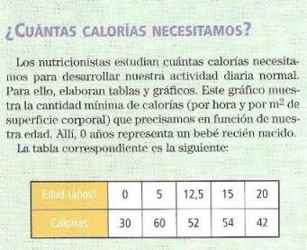
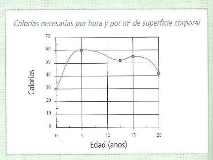

Introducción
- Estas funciones están definidas para todos los números reales. Es decir, el dominio de las funciones es el conjunto de los números reales. Recuerda que dominio, es el conjunto de todos los valores x que puede tomar la variable independiente.
- Las funciones polinómicas son continuas (su trazo no se interrumpe).
- Constituyen una de las familias de funciones que representan la mayor cantidad de fenómenos naturales.
¿Para qué sirven estas funciones?
En la Física...
Sabemos que al suspender un peso de un resorte, este se alarga, ¿podríamos determinar la ley que rige este alargamiento, al menos para un determinado intervalo? Sería como tratar de expresar el alargamiento del resorte en función del tiempo.
En la Química...
En el laboratorio de Química, ¿podemos estudiar la temperatura de una masa de agua con respecto al tiempo en que es sometida al calor? Se trata de relacionar la temperatura en función del tiempo.
En la Economía...
Un investigador suele expresar: el consumo en función del ingreso, también la oferta en función del precio, o el costo total de una empresa en función de los cambios de producción, entre otros muchos ejemplos donde se analiza cómo se comporta una variable en respuesta a los cambios que se producen en otras variables.
En la Biología...
Cuando se trata de precisar: el crecimiento de una población animal o vegetal en función del tiempo, el peso de un bulbo en función del diámetro del mismo, el consumo de oxigeno en función del trabajo realizado.


Las funciones polinómicas son aquellas cuya expresión es un polinomio, como por ejemplo:
f(x)=3x4-5x+6. Indicá el grado de la función.